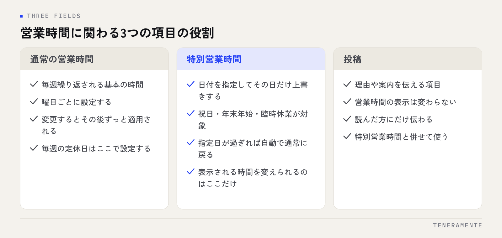

祝日に閉めていたのに「営業中」と表示され、来店したお客様を帰してしまった。地図検索まわりで最も多い行き違いのひとつです。特別営業時間は、Googleビジネスプロフィールの中で唯一「その日だけ」の表示を上書きできる項目で、ここが空のままだと通常営業として案内され続けます。
📌 この記事の結論
臨時休業や祝日の短縮営業は、投稿で告知しても営業時間の表示は変わりません。変わるのは特別営業時間に日付を入れたときだけです。祝日と年末年始は年のはじめにまとめて登録し、急な休業はその日のうちに特別営業時間へ入れる、という2段構えで運用してください。
01設定を忘れると、店舗側に何が起きるか
特別営業時間が空欄のとき、Googleマップと検索結果には通常の営業時間がそのまま表示されます。祝日も、年末年始も、臨時休業の日も、通常営業として案内されます。
起きることは3つに分かれます。1つめは、閉まっている店に来店されること。2つめは、閉店時刻を過ぎてからの電話や来店が続くこと。3つめが見落としやすいのですが、「営業時間が不正確」という指摘が口コミに残ることです。
3つめは時間が経っても消えません。来店した方が書いた指摘は、その後に検討する方がそのまま読みます。設定の抜けが、店の印象として残る形になります。
02営業時間・特別営業時間・投稿の役割はそれぞれ違う
混ざりやすい3つの項目を、先に分けておきます。

通常の営業時間は、毎週繰り返される基本の時間です。曜日ごとに設定し、変更するとその後ずっと適用されます。
特別営業時間は、日付を指定してその日だけ上書きする項目です。「10月19日は休業」「1月2日は12時から17時」のように、日付と時間を指定します。指定した日が過ぎれば、自動的に通常の営業時間へ戻ります。
投稿は、理由や案内を伝える項目です。表示される営業時間そのものは変わりません。投稿だけで済ませると、時間の表示は通常営業のまま残ります。
03設定手順：祝日と、日付を指定する休業
設定はGoogleビジネスプロフィールの管理画面から行います。検索結果やマップ上の自店の管理表示、またはビジネスプロフィール マネージャから「営業時間」の編集に入ると、通常の営業時間の下に特別営業時間の欄があります。
手順は次のとおりです。
- 営業時間の編集画面を開き、「特別営業時間」を選ぶ
- 近い祝日が候補として一覧に並ぶので、該当日の営業時間を入力するか「休業」を選ぶ
- 一覧に無い日は「日付を追加」から日付を指定して入力する
- 短縮営業の場合は開店・閉店の時刻を入れる（休業の場合は時刻を入れずに休業を指定）
- 保存し、検索結果の表示が切り替わったかを翌日に確認する
候補として並ぶ祝日は、入力しないと「未設定」の状態で残ります。候補に出ていること自体は設定済みを意味しません。ここを見落とすと、祝日だけ通常営業として案内されます。
04祝日・年末年始・お盆は、年のはじめにまとめて入れる
直前に思い出して入れる運用にすると、忙しい時期から順に抜けていきます。年末年始、お盆、ゴールデンウィークは、まさに来店も検索も増える時期です。
現実的なのは、年のはじめに1年分の祝日と長期休業をまとめて入れてしまう形です。作業は年1回で済み、その後は急な変更だけを足していく運用になります。
| 休業の種類 | 入れる時機 | 入れる場所 |
|---|---|---|
| 祝日・定休日と重なる祝日 | 年のはじめに1年分 | 特別営業時間 |
| 年末年始・お盆・連休 | 日程が決まった時点 | 特別営業時間（＋投稿で案内） |
| 研修・棚卸しなどの臨時休業 | 日程が決まった時点 | 特別営業時間 |
| 当日の急な休業 | その日のうち | 特別営業時間（＋投稿で理由） |
| 時間の短縮（繁忙期の早仕舞いなど） | 決まった時点 | 特別営業時間に時刻を指定 |
定休日と祝日が重なる週は要注意
「祝日は営業、翌日を振替休業」という運用の店舗は、祝日と振替日の両方を特別営業時間に入れてください。片方だけ入れると、営業している日が休業と表示される逆の行き違いが起きます。
05当日の急な休業は、特別営業時間が最優先
急な休業が決まったときの順番は決まっています。まず特別営業時間に当日を入れて休業にする。そのうえで、投稿で理由と再開の見込みを書く。この順番です。
逆にしてしまうと、投稿を読んだ方には伝わりますが、地図の一覧から直行した方には通常営業として表示されます。表示を変える操作を先に済ませると覚えてください。
電話が通じない時間が続く場合は、電話番号の削除まではせず、特別営業時間で休業を示すだけにとどめるのが無難です。項目を消すと、再開のときに戻し忘れが起きます。
06長期休業と「一時休業」の使い分け
数日から1週間程度の休業は、特別営業時間で日付ごとに指定します。一方、改装や移転の準備で数週間以上営業しない場合は「一時休業」の設定があります。
一時休業にすると、プロフィール全体が休業中として表示されます。再開したら解除します。注意したいのは、閉店と一時休業は別の設定だという点です。閉店にすると検索結果での扱いが変わり、元に戻す手間も大きくなります。
迷ったときの目安は、再開する日が決まっているかどうかです。決まっているなら特別営業時間、見通しが立たないなら一時休業、という切り分けが扱いやすい形です。
再開後の解除を忘れない
一時休業の解除は自動では行われません。再開日を決めた時点で、解除する日をカレンダーに入れておいてください。休業中の表示が残ると、営業しているのに候補から外れ続けます。
07複数店舗ある場合は、店舗ごとに入れる
複数の店舗を運営している場合、特別営業時間は店舗ごとの設定です。本部で一括して入れたつもりでも、店舗単位で反映されているかは個別に確認する必要があります。
管理画面で複数拠点をまとめて管理している場合、営業時間の一括編集に対応している項目と、していない項目があります。一括で入れたあと、必ず1〜2店舗を検索して表示を確かめる手順を入れてください。
店舗ごとに定休日が違う、祝日の扱いが違うというケースでは、一括編集のほうが抜けを生みやすくなります。拠点数が少ないうちは、店舗ごとに入れたほうが確実です。多店舗での情報の揃え方は複数店舗のMEO運用にまとめています。
08月1回の確認に、この項目を入れておく
特別営業時間は、入れた時点では正しくても、予定が変わると実態とずれます。確認を習慣にするのが結局いちばん早い方法です。
見るのは3点です。翌月の祝日が入っているか、通常の営業時間が実際と合っているか、終わった休業の設定が残っていないか。確認は翌月分を前月に見る形にすると、直前の慌ただしさに巻き込まれません。
この確認は、他の店舗情報の点検と同じ日にまとめてしまうのが現実的です。項目の立て方はGoogleビジネスプロフィールの月次チェックリストを下敷きにしてください。営業時間は、そのチェックリストの中でも最初に見る項目です。
臨時休業は投稿で知らせるだけでは足りませんか？
特別営業時間はどのくらい先まで入れられますか？
定休日は特別営業時間に入れるべきですか？
09まとめ：入れる日を決めてしまえば、抜けは防げる
特別営業時間と臨時休業の設定は、難しい作業ではありません。抜ける原因は、入れる時機を決めていないことだけです。年のはじめに祝日と長期休業をまとめて入れ、急な休業はその日のうちに入れ、月1回翌月分を確認する。この3つで、行き違いはほぼ防げます。
営業時間の正しさは、順位の工夫よりも先に効きます。来店の判断が「今から行けるか」で始まるためです。
TENERAMENTEなら、年間の祝日と定休日の扱いを特別営業時間に入れた状態でお渡しし、月1回どこを見るかという確認手順まで決めてから運用に移します。繁忙期に設定を思い出して慌てる時間がなくなり、予定が変わった日だけ手を入れれば済む状態になります。MEO対策の進め方をご覧いただいたうえで、お問い合わせからお気軽にご相談ください。